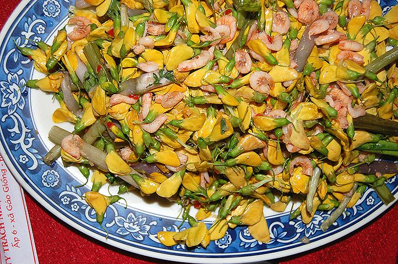

ढैंचाDhaincha
Sesbania bispinosa · Fabaceae · FLR-0111

- Scientific name
- Sesbania bispinosa (Jacq.) W.Wight
- Family
- Fabaceae
- Hindi
- ढैंचा
- Status here
- native
- IUCN
- not evaluated
When to look कब देखें
Expected mainly in June, July, August, September, October, November, December.
ढैंचा / Dhaincha
Sesbania bispinosa (Jacq.) W.Wight — Fabaceae
ढैंचा — धान से पहले खेत में बोई जाने वाली हरी खाद। बरसात के पहले हफ़्तों में बोओ, डेढ़ महीने में दो मीटर की पतली, पंखदार पत्तियों वाली झाड़ी, फिर हल चलाकर मिट्टी में मिला दो: जड़ों की गाँठें हवा से नाइट्रोजन बाँधकर खेत को खाद देती हैं। ऊसर और पानी भरी ज़मीन पर भी उगता है। डंठल से रेशा और ईंधन, पत्ती से थोड़ा चारा।
Quick Identification त्वरित पहचान
| Feature | Description |
|---|---|
| Habit | Slender, erect, little-branched annual 1–3 m, often in sown stands as thick as a crop |
| Stem | Green, pithy, with scattered tiny prickles on the stem and leaf stalks (hence "bispinosa") |
| Leaves | Pinnate, 10–30 cm, with 20–50 pairs of small narrow leaflets 1–2 cm; fold at night |
| Flowers | Pea-like, yellow, 1–1.5 cm, speckled or streaked purple-brown on the back, 2–6 on a drooping stalk |
| Pods | Very slender, 15–25 cm × 3 mm, straight or slightly curved, beaked, with 25–40 seeds |
| Roots | Nodulated; in flooded soil also nodules on the lower stem |
Field tip: In July and August, a field of waist-high to head-high feathery green plants beside a paddy field, waiting to be ploughed in, is almost certainly dhaincha. The small prickles on the stem and the long thin pods separate it from the other sesbans.
हिंदी — कैसे पहचानें: धान के खेत के पास जुलाई-अगस्त में लंबे, पतले, पंखदार पत्ती वाले पौधों का घना खेत; तने पर छोटे-छोटे काँटे; पीले छींटदार फूल; बहुत पतली लंबी फलियाँ।
Morphology आकारिकी
Biometrics (Indian crop and wild stands):
| Measurement | Range |
|---|---|
| Height | 100–300 cm |
| Stem diameter | 1–3 cm at base |
| Leaf | 10–30 cm, 20–50 leaflet pairs |
| Leaflet | 10–20 × 2–4 mm |
| Flower | 10–15 mm |
| Pod | 15–25 cm × 2–3 mm |
Stem: Soft and pithy when young, woody by the time the pods ripen; the small prickles are more a roughness than a defence.
Leaves: Paripinnate with a bristle at the tip, the leaflets linear-oblong, glaucous, with a fine point; they close at dusk.
Flowers: Typical papilionaceous flowers in short axillary racemes; bee-pollinated and self-compatible.
Roots and nodules: A taproot with lateral roots bearing abundant round nodules of Rhizobium; under flooding, aerenchyma and nodules form on the submerged stem, which is why dhaincha fixes nitrogen even in a waterlogged paddy field.
हिंदी: तना पहले नरम, बाद में लकड़ी जैसा; पत्तियाँ रात में बंद; फूल मटर जैसे पीले; फली धागे जैसी पतली। जड़ों और पानी में डूबे तने पर गाँठें, जिनमें जीवाणु नाइट्रोजन बाँधते हैं।
Behaviour & Ecology व्यवहार और पारिस्थितिकी
A wild plant of wet low ground across tropical Asia that became a crop because of what its roots do. In six to eight weeks it builds a stand of green matter and fixes atmospheric nitrogen in nodules, and it does this on waterlogged, saline and alkaline soils where most legumes fail; ploughed in, it leaves the field richer in nitrogen and organic matter and the sodic soil a little less so.
Wild plants line ditches, pond margins and seepage areas. The flowers feed Asian Honey Bee and Dwarf Honey Bee; the foliage feeds caterpillars and the stems are tunnelled by borers; the stand gives summer cover to frogs and Two-Spotted Cricket.
हिंदी: गीली, नीची ज़मीन का जंगली पौधा जो जड़ों के काम की वजह से फसल बन गया। छह-आठ हफ़्ते में घना हरा खेत, नाइट्रोजन बँधी हुई, पानी भरी और ऊसर ज़मीन पर भी। फूलों पर मधुमक्खी, पत्ती पर इल्ली, खेत में मेंढक और झींगुर।
Life Cycle / Phenology जीवन चक्र
| Month / season | Event |
|---|---|
| May–July | Sown on the first rains, or wild seed germinates in wet ground |
| 45–60 days after sowing | Ploughed in as green manure, before flowering, when the stand is 1.5–2 m |
| August–October | Flowering, in stands left for seed or fibre |
| October–December | Pods ripen; the plant dries and dies |
An annual; seed is hard and benefits from scarification; stands kept for seed give 500–1,000 kg per hectare.
हिंदी: बरसात की शुरुआत में बोया जाता है, 45 से 60 दिन में, फूल आने से पहले, मिट्टी में मिला दिया जाता है। बीज के लिए छोड़ा खेत अक्टूबर-दिसंबर में पकता है।
Associated Species / Interactions संबंधित प्रजातियाँ
- The crop it serves: Paddy, sown before it; also Wheat and Sugarcane rotations.
- Pollinators: Asian Honey Bee, Dwarf Honey Bee, carpenter bees.
- Residents of the stand: Two-Spotted Cricket, Asian Common Toad, Skittering Frog in the wet rows.
Pests and Diseases कीट और रोग
- Stem borers and leaf-eating caterpillars reduce seed stands; green-manure stands are ploughed in before damage matters.
- Stem and root rot in prolonged flooding of young plants.
- Nematodes on light soils.
Agricultural / Human Relevance कृषि प्रासंगिकता
Traditional and Ethnobotanical Use (documented uses; not medical advice):
- Green manure. The main use, and the reason it is in every district agriculture handbook: sown before paddy and incorporated at six to eight weeks, it adds tens of kilograms of nitrogen per hectare and much organic matter, and is the cheapest input a rice farmer has. Also the standard first crop in reclaiming usar with gypsum.
- Fibre. The retted stems give a coarse fibre for rope, sacking and fishing nets, once an industry in Bengal and Bihar.
- Fuel and fencing. The dry woody stems burn well and make temporary fences and trellises.
- Fodder. Leaves and young tops are fed in moderation; a diet of sesbania alone is harmful to stock.
- Traditional medicine. Seeds and leaves recorded as a poultice and for skin complaints in Kirtikar & Basu; the seed is said to be used as a fish poison in places.
Today. Promoted by state agriculture departments as green manure under rice; adoption rises when fertiliser prices rise. Seed is sold cheaply in every mandi before the kharif.
Research direction (a lead, not a result). Dhaincha in rice systems is one of the better-studied green manures in India, with long-term trials at Pantnagar, Faizabad and elsewhere; the open questions are local: how much nitrogen a Basti field actually gains, and whether the fibre or the biomass has a second value, as paper pulp or as feedstock for biogas, which Indian work has explored.
हिंदी: धान से पहले की हरी खाद — सबसे सस्ती खाद जो किसान के पास है; ऊसर सुधार की पहली फसल। डंठल से रस्सी और जाल का रेशा, सूखा तना ईंधन, पत्ती थोड़ा चारा। फैज़ाबाद और पंतनगर में इस पर लंबे प्रयोग हुए हैं।
Expected Locally स्थानीय रूप से अपेक्षित
Not a field record. Written from published accounts for eastern Uttar Pradesh. No confirmed local sighting yet — if you have seen it, that is what the atlas needs.
अभी तक स्थानीय पुष्टि नहीं। यह विवरण प्रकाशित स्रोतों से है, किसी अवलोकन से नहीं।
To be expected as sown green-manure stands in June and July wherever paddy follows, and as wild plants along ditches, pond margins and seepage lines through the monsoon. The sown stands are the easy record; the wild plants on waste wet ground are the one that says it belongs here.
Distribution वितरण
Global range: Native to tropical Asia and northern Australia; cultivated and naturalised in Africa and the Americas.
In India: Throughout the plains, wild and cultivated, up to about 1,200 m.
In Uttar Pradesh: Common in the rice belt as a crop and on wet waste ground.
In Basti district / eastern UP: Expected in paddy rotations and on low wet ground.
Research Questions शोध प्रश्न
Anyone can investigate these | कोई भी इन प्रश्नों की जाँच कर सकता है
- How many farmers in your village sow dhaincha, and why do the others not? / आपके गाँव में कितने किसान ढैंचा बोते हैं, और बाकी क्यों नहीं? — Ask twenty.
- Does the paddy after dhaincha look different? / ढैंचा के बाद का धान क्या अलग दिखता है? — Compare neighbouring fields through the season; note colour and height.
- How many nodules on one plant at six weeks? — Pull one gently, wash the roots, count.
- Which insects use the stand? — Sweep a net through a dhaincha field in August and list the catch.
- Does wild dhaincha grow on the usar patch? — Look along its wet edge in September.
Similar Species मिलती-जुलती प्रजातियाँ
| Species | How to tell apart | हिंदी |
|---|---|---|
| Common sesban, jayanti (Sesbania sesban) | Shrubby, lives several years, no prickles, flowers plain yellow, pods thicker | काँटे नहीं, बहुवर्षीय |
| Agathi (Sesbania grandiflora) | A small tree with large white or red flowers eaten as a vegetable | बड़े सफ़ेद फूल, पेड़ |
| Sunn hemp (Crotalaria juncea) | Also a green manure, but leaves simple not pinnate, flowers bright yellow, pods inflated | सादी पत्ती, फूली फली |
Field rule: A tall, feathery-leaved monsoon annual with faintly prickly stems, purple-speckled yellow pea flowers and thread-thin pods, sown before paddy, is dhaincha.
Taxonomy & Classification वर्गीकरण
Original description. Described by Nikolaus Joseph von Jacquin in 1788 as Aeschynomene bispinosa in Icones Plantarum Rariorum 3: 13, t. 564. Transferred to Sesbania by W. Wight in 1909 (Bulletin of the Bureau of Plant Industry, USDA 137: 15). Long known in Indian literature as Sesbania aculeata (Willd.) Pers.
Subspecies. Monotypic — no subspecies are currently recognised.
Family and order placement. Fabaceae, subfamily Papilionoideae, tribe Sesbanieae; order Fabales. Sesbania holds about 60 species of wet tropical ground.
Phylogenetic notes. The stem-nodulating sesbanias, this species among them, are a distinct lineage within the genus; their ability to form nodules above the waterline is unusual among legumes.
IUCN status rationale. Not evaluated. Widespread in the wild and in cultivation.
Photo Gallery फोटो गैलरी
Photos needed आवश्यक फोटो
- [ ] A green-manure stand beside paddy, July (खेत)
- [ ] Flower and leaf close-up (फूल)
- [ ] Washed roots showing nodules (जड़ की गाँठें)
Atlas Connections संबंधित प्रजातियाँ
- Paddy — the crop it is grown to feed
- Water Fern — the other nitrogen-fixer of the rice field
- Asian Honey Bee — on the flowers
- Two-Spotted Cricket — lives in the stand
References संदर्भ
- Jacquin, N.J. von (1788). Icones Plantarum Rariorum, vol. 3, p. 13, t. 564. Vienna. [original description, as Aeschynomene bispinosa]
- Wight, W.F. (1909). The Genus Sesbania. Bulletin of the Bureau of Plant Industry, USDA, 137: 15. [transfer to Sesbania]
- Hooker, J.D. (1878). The Flora of British India, vol. 2. L. Reeve, London. (as Sesbania aculeata)
- Duthie, J.F. (1903). Flora of the Upper Gangetic Plain, vol. 1. Government Printing, Calcutta.
- Kirtikar, K.R. & Basu, B.D. (1935). Indian Medicinal Plants, 2nd ed., vol. 1. Lalit Mohan Basu, Allahabad.
- Council of Scientific and Industrial Research (1972). The Wealth of India: Raw Materials, vol. 9 (Rh–So). CSIR, New Delhi.
- Evans, D.O. & Rotar, P.P. (1987). Sesbania in Agriculture. Westview Press, Boulder.
- GBIF Occurrence Data — Sesbania bispinosa, India (2026).
Source file: species/flora/crops/dhaincha.md